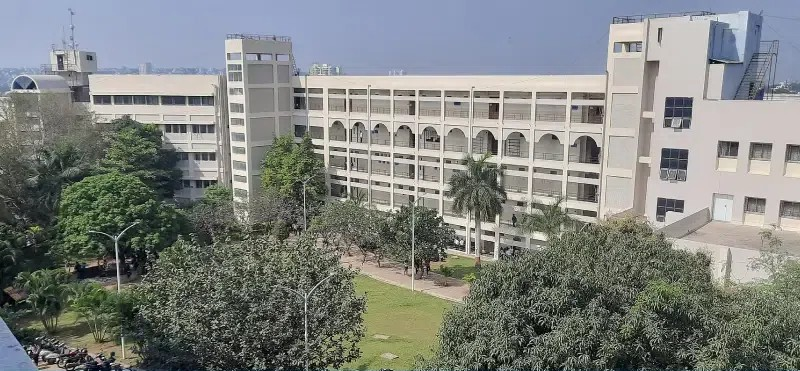

Engineer The Future You Want To See
Since its inception in 1983, Vishwakarma Institute of Technology, Pune (VIT, Pune) has believed in providing education that empowers its students. A rigorous focus on academic excellence, a culture of research and innovation and a thriving learning environment have made it a top engineering college in Pune. VIT, Pune, has had an illustrious track record of achievements and achievers in leadership positions worldwide.

Extra-Curricular Activities At VIT
Besides excelling in academia, VIT Pune fosters a dynamic and immersive environment where students can actively pursue their passions in technology, entrepreneurship, and innovation. The institute places a strong emphasis on hands-on learning, encouraging students to go beyond theoretical concepts and engage with real-world challenges. Various technical clubs, hackathons, and workshops serve as platforms for students to develop their practical skills, collaborate on groundbreaking projects, and gain exposure to emerging technologies. Whether through coding competitions, startup incubation programs, or research initiatives, students are empowered to transform their ideas into impactful solutions, preparing them for the ever-evolving professional landscape. Beyond technical expertise, VIT Pune also focuses on holistic student development. The Student Personality Development Cell (SPDC) plays a crucial role in enhancing essential soft skills such as communication, problem-solving, leadership, and teamwork. Through specialized training sessions, industry interactions, and personality development programs, students are equipped to excel in both their careers and personal lives. The campus environment is vibrant, filled with opportunities for networking, extracurricular activities, and cultural events that foster a sense of community and belonging. Life at VIT Pune is a transformative journey where students not only grow academically but also evolve into confident, innovative, and socially responsible individuals, unlocking their full potential for a successful future.